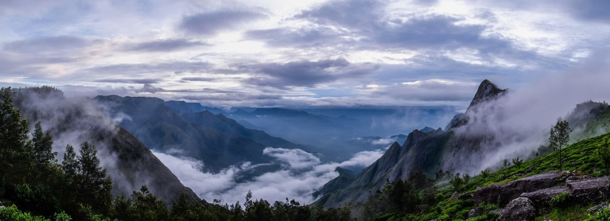

Located about 13 km from Munnar Town, Situated at a height of 1700 m above sea level, Mattupetty is known for its storage masonry dam and the beautiful lake, which offers pleasurable boat rides
Tea Plantations
Munnar has a legacy of its own when it comes to the origins and evolution of tea plantations. Taking account of this legacy and to preserve and showcase some of the exquisite
Photo Point
Munnar is photogenic, the Photo Point is doubly so. This site is a photographer’s favourite. Surrounded by the Tata Tea gardens of the Kanan Devan Hills and a string of silver oak trees

Kolukkumalai
Located about 7,130 feet (2,170 m) above sea level. The hill top is accessible only by jeep due to rain drenched roads covering up to 17 km. It is home to the highest tea plantations in the world
Top Station
Top Station is located around 32 km away from Munnar, at a height of 1700 meters above the sea level. The cool breeze and wild flowers make this a great place to wind away the hours
Lakkom Water Falls
Lakkom Water Falls, also known as Lakkam Waterfalls, is a tourist attraction located near about 25 km from Munnar. Lakkom Waterfalls is on the way to Udumalaipettai from Munnar
Eravikulam National Park
Eravikulam National Park is located along the Western Ghats in the Munnar. It is the First National Park in Kerala. This Park is famous for its endangered inhabitant - The Nilgiri Tahr
Echo Point
Echo Point is situated around 15 kilometers from Munnar, and it always draws huge crowd for its natural echo phenomenon. It is Located on the way to the Top station
Pothamedu Viewpoint
Pothamedu Viewpoint is one of the famous tourist destinations in Munnar. Pothamedu viewpoint is an ideal tourist destination for nature lovers, adventure seekers, photography addicts